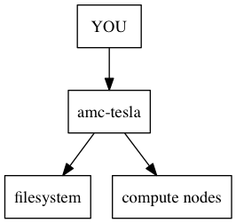

| Class date: | Wednesday 5 February 2014 |
|---|
| Class date: | Wednesday 5 February 2014 |
|---|
Use grep(1) to identify lines in a file that match a specified pattern.
To find any instance of chr5 in the lamina.bed file
# grep [pattern] [filename]
$ grep chr5 /opt/bio-workshop/data/lamina.bed | head
To find all lines that start with a number sign:
# The caret (^) matches the beginning of the line
# FYI dollar sign ($) matches the end
$ grep '^#' /opt/bio-workshop/data/lamina.bed
To find any line that does not start with "chr":
# the -v flag inverts the match (grep "not" [pattern])
$ grep -v '^chr' /opt/bio-workshop/data/lamina.bed
Beware of using grep to find patterns that might be partial matches:
# this will match chr1, chr10, chr11 etc.
$ grep chr1 /opt/bio-workshop/data/lamina.bed | cut -f1 | uniq
You can find exact matches that are split on words with the -w flag:
# this will only match chr1
$ grep -w chr1 /opt/bio-workshop/data/lamina.bed | cut -f1 | uniq
Beware of using grep to search for numbers:
# finds all strings that match `100`
$ grep 100 /opt/bio-workshop/data/lamina.bed | head -n 20
# better, but doesn't look at numeric value
$ grep -w 100 /opt/bio-workshop/data/lamina.bed | head -n 20
Tip
If you're trying to find numeric values in a file, use awk instead:
$ awk '$2 == 500' /opt/bio-workshop/data/lamina.bed
We have set up accounts for the class on our departmental cluster. We will set up your accounts at the end of class and reset your passwords:
# the -X flag starts an X11 connection
$ ssh -X username@amc-tesla.ucdenver.pvt
...
# once you are logged in, text your X11 connection with
$ xeyes
There are some specific rules you need to know when you're operating in a cluster environment.

Important
DO NOT run jobs on the head node (amc-tesla). The head node is the brains of the cluster and it can easily be overextended. Use qlogin instead.
Find the size of the file system:
$ df -h
Find how much space you have allocated:
$ quota -h
First you will grab a single CPU from the queueing system so that you can work without affecting the head node. We use qlogin for this:
jhessel@amc-tesla ~
$ qlogin
Job <492536> is submitted to queue <interactive>.
<<ssh X11 forwarding job>>
<<Waiting for dispatch ...>>
<<Starting on compute00>>
jhessel@compute00 ~
$
Note
The host in the prompt changed from amc-tesla to compute00.
You can now execute long-running processes without worry of affecting the cluster. Type exit to return back to your head node login.
The cluster uses a queueing system that will run jobs that you submit to it. You can write a small test script to see how the system works. First, write this into a run.sh file:
#!/usr/bin/env bash
#BSUB -J sleeper
#BSUB -e %J.err
#BSUB -o %J.out
sleep 20
The #BSUB lines are comments, but are read by the bsub program to identify features associated with your job.
- -J sets the job's name
- %J is a unique job ID that is set when you run the job.
- -e and -o set the filenames for stderr and stdout from the job
Now you can submit the script to the queuing system. As soon as you submit it, you can check on its progress:
$ bsub < run.sh
$ bjobs
After the job finishes, you should see two new files that end .out and .err; these stdout and stderr from the running job. Look at the contents of those files so you know what is in each one.
Sometimes you need to kill your jobs. You can kill specific jobs using their job ID numbers, obtained from checking bjobs:
$ bkill <jobid>
You can also kill all of your jobs at once:
$ bkill 0
Warning
bkill 0 is dangerous – it will wipe out all of your jobs. If you have long-running jobs that you forgot about, you will kill them too if you are not careful!
$ bhosts # hosts in the cluster
$ man bhosts # bsub man page
$ bqueues # available queues
$ lsload # check load values for all hosts
We're going to take a break this class so that you can catch up on your exercises. Please spend some time going back through the exercises from classes 1-4.